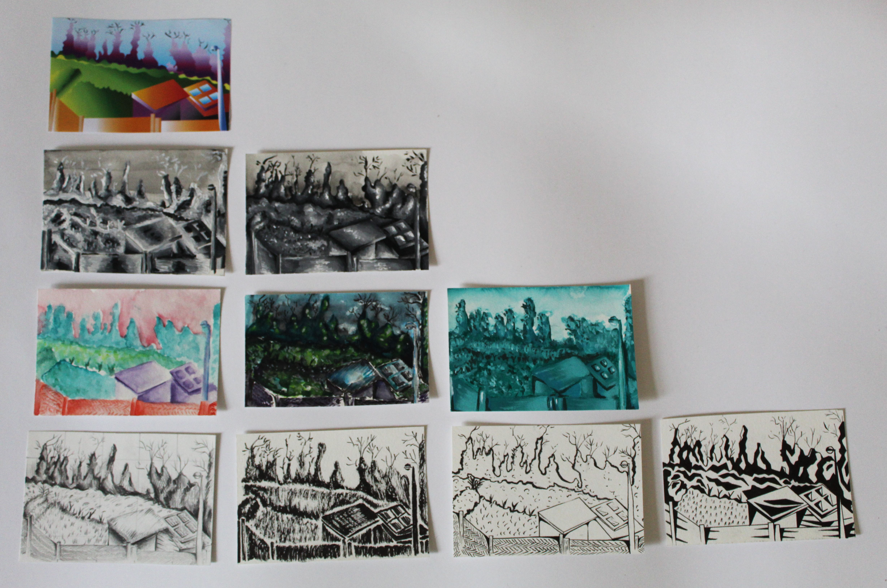
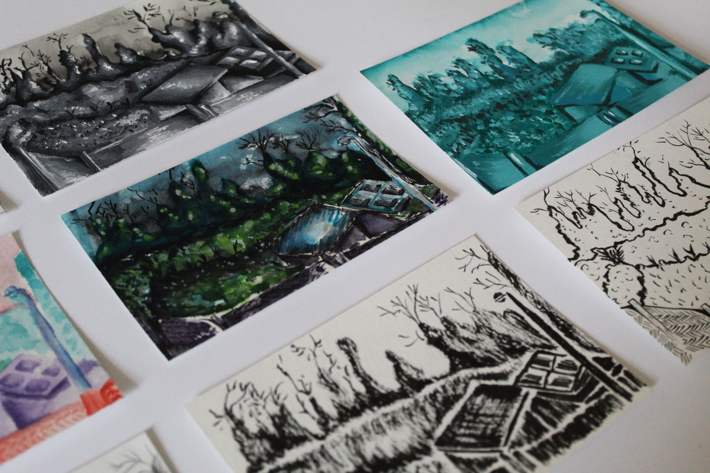
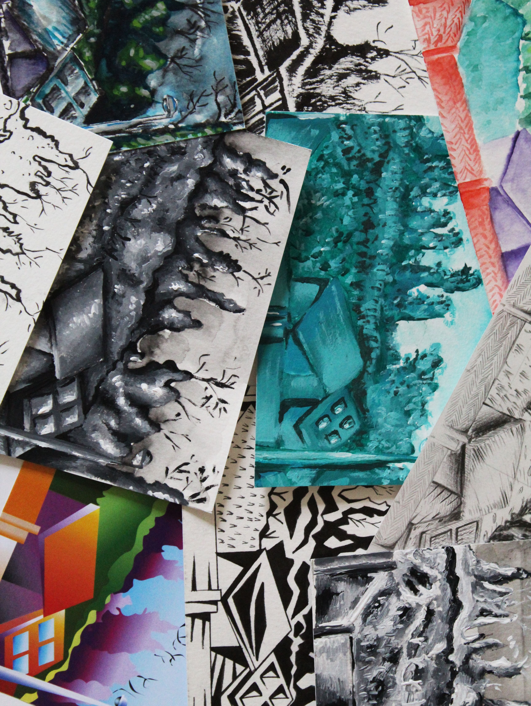

Eloise Caro Portfolio
Contact
@eloise.draw
  
Illustrations\\
Ce projet d'illustration ce base sur un seul et même paysage décliné a travers différents principes de style et de couleurs. Le monochromme, les formes géométriques, le négatif, le noir et blanc, le gris optique ou encore les couleurs pastels. Ici on retrouve des illustrations à l'acrylique, au feutre, à l'aquarelle, au tracé vectoriel.
Retour Acceuil